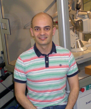

Cayetana ZÁRATE SÁEZ
PREDOC-MESTRELAB: Premio al autor de la mejor publicación científica, con número de página de 2014, en cualquier área de la química, y que no estuviera en posesión del título de doctor a 31 de diciembre de 2014.
- Cayetana Zárate se graduó con Premio Extraordinario de Fin de Carrera en la Universidad de Valladolid en 2012. Durante sus dos últimos años de licenciatura trabajó en catálisis de oro en el grupo del Profesor Pablo Espinet gracias a la concesión de dos becas de colaboración.
- En Octubre de 2012 se trasladó a Tarragona para trabajar en el grupo de Rubén Martín y
- en Julio de 2013 recibió el título de Master in Synthesis and Catalysis por la Universidad Rovira i Virgili.
- En Julio de 2015 comenzó una estancia predoctoral en la Universidad de Princeton, en el grupo del Profesor Paul J. Chirik. Sus estudios de doctorado en el grupo de Rubén Martín se centran en el área de la activación catalítica de enlaces C-O.
El fruto de su trabajo de doctorado se refleja en publicaciones como:
Ipso-Borylation of Aryl Ethers via Ni-Catalyzed C-OMe Cleavage
Zarate, C.; Manzano, R.; Martin, R. J. Am. Chem. Soc. 2015, 137, 6754–6757
*Entre las publicaciones más leídas en Mayo de 2015
A Mild Ni/Cu-Catalyzed Silylation via C–O Cleavage
Zarate, C.; Martin, R. J. Am. Chem. Soc. 2014, 136, 2236-2239
*Uno de los 10 artículos más leídos en Febrero de 2014
Metal-catalyzed activation of ethers via C–O bond cleavage: a new strategy for molecular diversity
Zarate, C.; Cornella, J.; Martin, R. Chem. Soc. Rev. 2014, 43, 8081-8097
*Artículo más leído en Agosto de 2014.
Dr. Antonio Jesús MARTÍNEZ MARTÍNEZ
POSTDOC-MESTRELAB: Premio al autor de la mejor publicación científica, con número de página de 2014, en cualquier área de la química, y que estuviera en posesión del título de doctor a 31 de diciembre de 2014.
- Antonio J. Martínez-Martínez, licenciado en Química por la Universidad de Murcia en 2005, se doctoró en dicha Universidad en 2012 con la máxima calificación de Sobresaliente ‘Cum Laude’ y Premio Extraordinario de Doctorado.
- Realizó su tesis doctoral en el Grupo de Química Organometálica bajo la supervisión de los Profs. José Vicente y María Teresa Chicote trabajando en la síntesis y aplicaciones de complejos de organopaladio en síntesis orgánica. Durante esta etapa realizó dos estancias en la Universidad de Glasgow (UK) en el grupo de Química Computacional del Prof. John McGrady (actualmente en la Universidad de Oxford, UK).
- En 2012 se incorporó como ‘EPSRC Postdoctoral Research Assitant’ en el Grupo del Dr. Charles O’Hara de la Universidad de Strathclyde (Glasgow, UK), donde actualmente continúa trabajando.
- Sus líneas de investigación se enfocan en el diseño racional de compuestos bimetálicos que incorporan metales con distintas polaridades y el estudio de sus aplicaciones en síntesis orgánica, especialmente en la activación de enlaces C-H. Entre otras, actualmente desarrolla colaboraciones con los grupos del Prof. Robert Mulvey (de la misma Universidad) y del Prof. Holger Braunschweig de la Universidad Julius-Maximilians de Würzburg (Germany).
Publicaciones seleccionadas
1) A. J. Martínez-Martínez, A. R. Kennedy, R. E. Mulvey, C. T. O'Hara. "Directed ortho-meta'- and meta-meta'-dimetalations: A template base approach to deprotonation", Science 2014, 346, 834-837.
Recientemente destacado en Nature Chem. 2015, 7, 8; y en Chemical & Engineering News 2014, 92, 35.
2) A. J. Martínez-Martínez, D. R. Armstrong, B. Conway, B. J. Fleming, J. Klett, A. R. Kennedy, R. E. Mulvey, S. D. Robertson, C. T. O’Hara. "Pre-inverse-crowns: synthetic, structural and reactivity studies of alkali metal magnesiates primed for inverse crown formation", Chem. Sci. 2014, 5, 771-781.
3) A. R. Kennedy, S. M. Leenhouts, J. J. Liggat, A. J. Martínez-Martínez, K. Miller, R. E. Mulvey, C. T. O'Hara, P. O'Keefe, A. Steven. "Dehydromethylation of alkali metal salts of the utility amide 2,2,6,6-tetramethylpiperidide (TMP)", Chem. Commun. 2014, 50, 10588-10591.